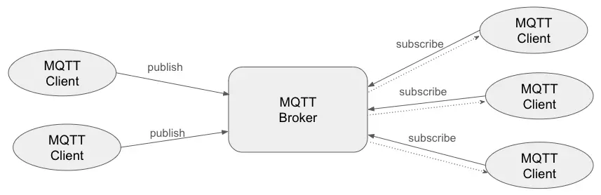

物联网的世界里 MQTT 独领风骚
Posted on 六 23 3月 2024 in Journal
| Abstract | 物联网的世界里 MQTT 独领风骚 |
|---|---|
| Authors | Walter Fan |
| Category | learning note |
| Status | v1.0 |
| Updated | 2024-03-23 |
| License | CC-BY-NC-ND 4.0 |
MQTT 是一种基于发布/订阅模型的轻量级消息传递协议，专为低带宽和不稳定网络环境中的物联网应用而设计。 它可以用最少的代码为网络连接设备提供实时可靠的消息服务。 MQTT协议广泛应用于物联网、移动互联网、智能硬件、车联网、智慧城市、远程医疗、电力、石油、能源等领域。
MQTT 由 IBM 的 Andy Stanley-Clark 和 Arlen Nipper 创建的。 Nipper 认为，MQTT 必须具备以下特性：
- 简单且易于实施
- 在复杂设备网络环境中支持 QoS
- 轻量级且节省带宽
- 数据无关性, 也就是并不关心负载数据格式
- 持续的会话感知, 即始终知道设备是否在线
网络协议有很多, 例如 HTTP, XMPP, CoAP 等协议, 为什么 MQTT 能在物联网的世界中脱颖而出呢? 原因在于:
- 轻量级: MQTT 消息很小, 支持多种负载格式, 容易编解码, 占用带宽低
- 可靠性: MQTT 支持不同级别的 QoS, 支持不同程度的可靠传输, 会话感知和持久连接
- 安全性: MQTT 支持 TLS, 以及通过用户名密码或者客户端证书进行身份验证和授权
- 双向通信: MQTT 基于发布-订阅架构模式, 相对于客户端/服务器和点对点架构, 支持双向通信,网络拓扑也简单很多, 解耦了发送者和接收者，减少了网络流量和资源使用。
- 连续而有状态的会话: MQTT 允许客户端与代理 Broker 保持有状态的会话, 系统即使在断开连接后也能记住订阅和未传递的消息, 客户机还可以连接期间进行保活, 使间歇性的连接不会导致数据丢失
- 大规模物联网设备支持: 物联网系统通常涉及大量设备，需要能够处理大规模部署的协议。 MQTT 的轻量级特性、低带宽消耗和资源的高效利用使其非常适合大规模物联网应用。 此外，不同的 QoS 级别，允许根据应用程序的需求定制消息传递，确保在各种场景下获得最佳性能。
- 多种编程语言支持: 各种主流编程语言对 MQTT 协议都有相应的客户端和应用
MQTT 是如何工作的
类似于传统的消息队列系统, MQTT 也分为客户端和代理端. 发布-订阅模式与客户端-服务器模式的不同之处在于，它将发送消息的客户端（发布者）与接收消息的客户端（订阅者）分开。 发布者和订阅者不需要建立直接连接，MQTT Broker 负责路由和分发所有消息。

Topic 主题
MQTT 协议根据主题 topic 路由消息。 主题通过斜杠 / 区分层次结构，类似于 URL 路径，例如：
chat/room/1
sensor/10/temperature
sensor/+/temperature
MQTT 主题支持以下通配符：+ 和 #。
+：表示单级通配符，如a/+匹配a/x或a/y#：表示多级通配符，如a/#匹配a/x 或 a/b/c/d
服务质量 (QoS)
MQTT提供三种服务质量，保证不同网络环境下消息传递的可靠性。
- QoS 0：消息最多传递一次。 如果客户端当前不可用，它将丢失此消息。
- QoS 1：消息至少传递一次。
- QoS 2：消息仅传递一次。
示例
1) 启动最流行的 MQTT Broker -- EMQX
docker run -d --name emqx -p 1883:1883 -p 8083:8083 -p 8084:8084 -p 8883:8883 -p 18083:18083 emqx:5.5.1
其中的 dashboard 端口为 18083, 默认密码为 admin/public
基于 Eclipse Paho™ MQTT Python Client, 我也写了一个简单的 mqtt_client.py, 消息体参照 XMPP 的消息格式 , 从 XML 形式换成了 json 格式. 具体代码很简单, 详情参见我在 github 上建立的仓库 https://github.com/walterfan/mqtt_python_client, 用法如下
2) 启动 python 客户端
- 设置基本的运行环境
python3 -m venv venv
source ./venv/bin/activate
pip install --upgrade pip
pip install -r requirements.txt
- 基本的用法
./mqtt_client.py -a <sub|pub> -b <broker_address> [-p <port> -u <username> -s <password>] -t <topic> -m <message>
- 发布和订阅消息的例子
./mqtt_client.py -b localhost -a pub -t "/waltertest/req" -m "hello"
./mqtt_client.py -b localhost -a sub -t "/waltertest/#"
例如在我的电脑上运行结果如下:
% ./mqtt_client.py -b localhost -a pub -t "/waltertest/req" -m "hello"
connect MqttConfig(broker='localhost', port=1883, username='admin', password='public') ...
.Connected to MQTT Broker: MqttConfig(broker='localhost', port=1883, username='admin', password='public')
Sent `{"from": "alice", "to": "bob", "time": 1711119463945, "seq": 1, "command": "hello", "track_id": "aec893b5-8d12-4640-a336-59e107bbe4a8"}` to topic `/waltertest/req`
% ./mqtt_client.py -b localhost -a sub -t "/waltertest/#"
connect MqttConfig(broker='localhost', port=1883, username='admin', password='public') ...
.Connected to MQTT Broker: MqttConfig(broker='localhost', port=1883, username='admin', password='public')
.2024-03-22 22:57:51.428 | DEBUG | __main__:on_message:139 - Received `{"from": "alice", "to": "bob", "time": 1711119463945, "seq": 1, "command": "hello", "track_id": "aec893b5-8d12-4640-a336-59e107bbe4a8"}` from `/waltertest/req` topic, count=1
参考资料
- MQTT 5.0 Specification
- MQTT 3.1.1 Specification
- MQTT Glossary
- MQTT 5.0 Features
- MQTT 入门指南
- MQTT 客户端工具
- How-to-use-mqtt-in-python
本作品采用知识共享署名-非商业性使用-禁止演绎 4.0 国际许可协议进行许可。